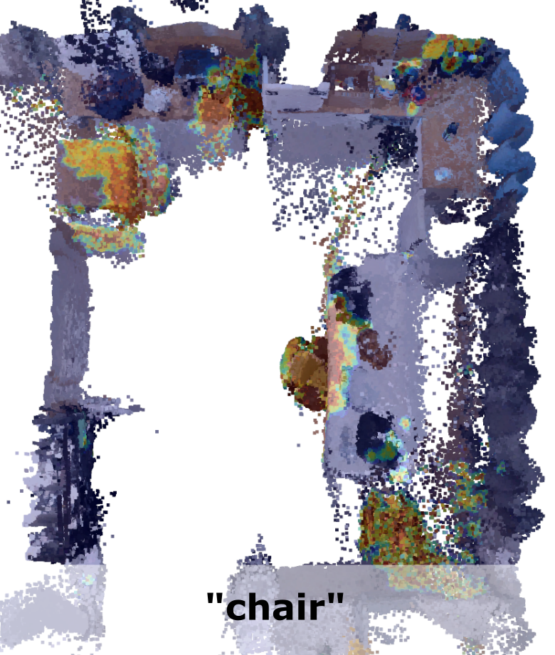
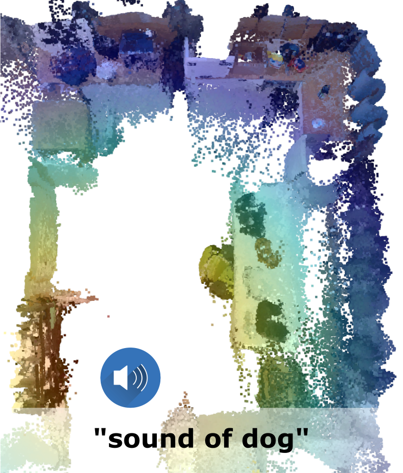

Grounding language to a navigating agent's observations can leverage pretrained multimodal foundation models to match perceptions to object or event descriptions. However, previous approaches remain disconnected from environment mapping, lack the spatial precision of geometric maps, or neglect additional modality information beyond vision. To address this, we propose multimodal spatial language maps as a spatial map representation that fuses pretrained multimodal features with a 3D reconstruction of the environment. We build these maps autonomously using standard exploration. We present two instances of our maps, which are visual-language maps (VLMaps) and their extension to audio-visual-language maps (AVLMaps) obtained by adding audio information. When combined with large language models (LLMs), VLMaps can (i) translate natural language commands into open-vocabulary spatial goals (e.g., ``in between the sofa and TV'') directly localized in the map, and (ii) be shared across different robot embodiments to generate tailored obstacle maps on demand. Building upon the capabilities above, AVLMaps extend VLMaps by introducing a unified 3D spatial representation integrating audio, visual, and language cues through the fusion of features from pretrained multimodal foundation models. This enables robots to ground multimodal goal queries (e.g., text, images, or audio snippets) to spatial locations for navigation. Additionally, the incorporation of diverse sensory inputs significantly enhances goal disambiguation in ambiguous environments. Experiments in simulation and real-world settings demonstrate that our multimodal spatial language maps enable zero-shot spatial and multimodal goal navigation and improve recall by 50% in ambiguous scenarios. These capabilities extend to mobile robots and tabletop manipulators, supporting navigation and interaction guided by visual, audio, and spatial cues.
The key idea behind building an AVLMap is to integrate visual and audio information into the 3D reconstruction of an environment. This can be done by computing visual localization features (e.g. NetVLAD, SuperPoint), visual-language features (e.g. LSeg), and audio-language features (e.g. AudioCLIP) and associate these features with the 3D reconstruction. Finally, we can predict 3D heatmaps indicating the location of multimodal concepts such as objects, sounds, and images.
When the language is ambiguous, the robot can use the multimodal information to narrow down the goal location. For example, if the robot is asked to go to the "chair near the sound of baby crying", it can use the audio information integrated in the map to disambiguate the goal. The intuition behind this is that we convert the predictions from different modalities into 3D heatmaps, and compute the pixel-wise joint probability of the heatmaps. This allows us to compute the probability of a goal location given the multimodal query.

We generate the navigation policies in the form of executable code with the help of Large Language Models. By providing a few examples in the prompt, we exploit GPT-3 to parse language instructions into a string of executable code, expressing functions or logic structures (if/else statements, for/while loops) and parameterizing API calls (e.g., robot.load_image(img_path), robot.move_to(position), robot.get_major_map(sound=sound_name), robot.get_major_map(img=image), robot.get_major_map(obj=obj_name) etc.).
Major
Auxiliary
Fuse


We extend our investigation to assess how AVLMaps benefit a fixed-based manipulator in real-world table-top tasks, which require a more detailed semantic understanding of the scene. In this setup, the robot manipulator must approach multimodal goals with a stricter tolerance for error (within 10 cm). Additionally, we explore AVLMaps' potential for application across robots with varied embodiments
@article{huang23avlmaps,
title={Multimodal Spatial Language Maps for Robot Navigation and Manipulation},
author={Chenguang Huang and Oier Mees and Andy Zeng and Wolfram Burgard},
booktitle=International Journal of Robotics Research (IJRR),
year={2025},
}